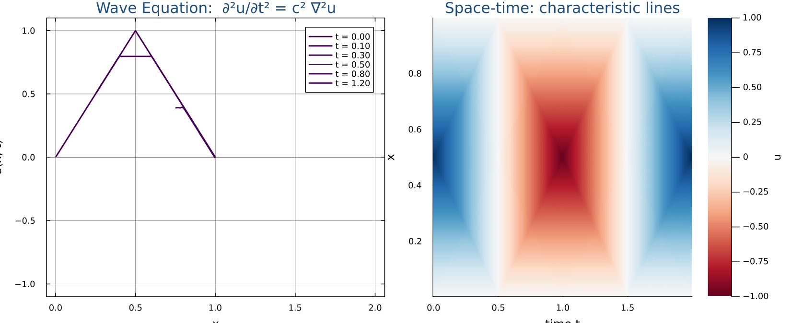

Wave equation
Leap-frog in any dimension; the CFL condition and how it tightens as you add axes.
Example B — Wave Equation (Hyperbolic)
The wave equation describes any disturbance that propagates with a finite speed — sound in air, light, vibrations on a string, seismic shocks. The classic 1-D version is what you get from modelling a tightly stretched guitar string: the acceleration of the string at every point is proportional to its local curvature, with proportionality $c^2$ (the wave speed squared).
Mathematically, the wave equation looks almost like the heat equation — the right-hand side is exactly the same Laplacian $\partial^2 u/\partial x^2$ — but the left-hand side is now a second time derivative instead of a first. That single change has two big consequences:
- We need an initial condition for both $u$ and $\dot u$, because a second-order ODE in time needs two starting values.
- The natural time-stepping scheme is leap-frog, which keeps track of three time levels — past, present, future — instead of the two we had for heat.
Rule 1 (the spatial stencil) is applied identically — only the time discretisation changes. Read the cards below the same way as for heat: textbook equation on the left, Julia code on the right, one transformation at a time.
BCs: $u(0,t) = u(L,t) = 0$ (fixed ends — like a guitar string)
ICs: $u(x,0) = u_0(x)$, $\;\dot{u}(x,0) = 0$ (plucked, then released)
Parameter: $c$ = wave speed
# Because the PDE has ∂²u/∂t², we need:
# u_prev = u^{n-1} (one step ago)
# u_curr = u^n (current)
# u_next = u^{n+1} (what we compute)
u_prev = initial_condition.(x)
u_curr = copy(u_prev) # explained in step 5
right_side = (c^2 / dx^2) .*
(u_curr[3:end] .- 2 .* u_curr[2:end-1]
.+ u_curr[1:end-2])
# Same stencil as Example A — only α replaced by c²
Compare to Rule 1: the same $[+1,\,-2,\,+1]$ pattern — but across time instead of space. Solve for $u_i^{n+1}$: $\;u_i^{n+1} = 2u_i^n - u_i^{n-1} + \Delta t^2 \cdot(\ldots)$
# u^{n+1} = 2u^n - u^{n-1} + Δt² × right_side
u_next[2:end-1] .=
2 .* u_curr[2:end-1] .- u_prev[2:end-1] .+
dt^2 .* right_side
Notice: the space stencil $[+1,-2,+1]$ is identical to the heat equation — only the time part differs.
λ = (c * dt / dx)^2 # CFL number squared
u_next[2:end-1] .=
2 .* u_curr[2:end-1] .- u_prev[2:end-1] .+
λ .* (u_curr[3:end] .- 2 .* u_curr[2:end-1]
.+ u_curr[1:end-2])
CFL stability: $\lambda = c\,\Delta t / \Delta x \leq 1$ $\;\Longrightarrow\;$ $\Delta t \leq \Delta x / c$
# Zero velocity IC: u_prev = u_curr at t=0 # (the update formula gives the right result) u_prev = copy(u_curr) # CFL: λ = c·dt/dx ≤ 1 dt = 0.4 * dx / c # λ = 0.4 < 1 ✓
using juliaPDEs, Plots
# Triangular pluck as the initial condition
pluck(x) = x < 0.5 ? 2x : 2(1 - x)
prob = WaveEquation(
N_grid = (300,),
c = 1.0,
T = 1.5,
Nt = 600,
f_init = pluck,
)
sol = solve(prob) # dispatches to solve(::WaveEquation) — leap-frog inside
plot(sol.x, sol.u, xlabel="x", ylabel="u(x,T)", title="Wave equation T=1.5", lw=2)
How this figure was generated (Julia)
using juliaPDEs, Plots
prob = WaveEquation(
N_grid = (300,),
Nt = 600,
T = 1.5,
f_init = x -> x < 0.5 ? 2x : 2*(1 - x),
)
plot(prob; savepath="wave_equation.png")Wave Equation — 2D
The wave solver, like the heat solver, is dimension-agnostic. There is
one parametric struct WaveEquation{N, F} in
src/wave.jl; for 2D you pass a 2-tuple for
N_grid and Julia specializes the leap-frog loop for
$N = 2$. The struct definition:
Base.@kwdef struct WaveEquation{N, F} <: HyperbolicProblem
N_grid::NTuple{N, Int} # endpoint-inclusive grid
a::NTuple{N, Float64} = ntuple(_ -> 0.0, length(N_grid)) # lower bound per axis
b::NTuple{N, Float64} = ntuple(_ -> 1.0, length(N_grid)) # upper bound per axis
Nt::Int = 300
T::Float64 = 1.0
c::Float64 = 1.0
f_init::F = x -> sin(π * x) # default is 1D
endThe PDE and its leap-frog discretisation (CFL: $\lambda_x + \lambda_y \le 1$):
$$\frac{\partial^2 u}{\partial t^2} = c^2\!\left(\frac{\partial^2 u}{\partial x^2} + \frac{\partial^2 u}{\partial y^2}\right)$$ $$u_{i,j}^{n+1} = 2u_{i,j}^n - u_{i,j}^{n-1} + \lambda_x\,\delta_x^2 u^n + \lambda_y\,\delta_y^2 u^n$$where $\lambda_x = (c\,\Delta t/\Delta x)^2$ and $\lambda_y = (c\,\Delta t/\Delta y)^2$.
using juliaPDEs, Plots
prob = WaveEquation(
N_grid = (100, 100), # ⇒ N = 2
Nt = 300,
T = 1.0,
c = 1.0,
f_init = (x, y) -> exp(-80 * ((x - 0.5)^2 + (y - 0.5)^2)),
)
sol = solve(prob) # PDESolution — 100×100
heatmap(sol.x, sol.y, sol.u',
xlabel="x", ylabel="y", title="2D Wave t=$(sol.t)",
color=:RdBu, aspect_ratio=1, clims=(-1,1))Wave Equation — 3D
No new struct, no new solver — pass a 3-tuple for N_grid
and a 3-arg f_init and Julia compiles the leap-frog loop
specialized for $N = 3$. The CFL tightens to
$\lambda_x+\lambda_y+\lambda_z\le 1$; keep N_grid ≤ (50,50,50)
— memory scales as $N^3$.
The 3D wave equation and its 7-point leap-frog stencil:
$$\frac{\partial^2 u}{\partial t^2} = c^2\!\left(\frac{\partial^2 u}{\partial x^2} + \frac{\partial^2 u}{\partial y^2} + \frac{\partial^2 u}{\partial z^2}\right)$$ $$u_{i,j,k}^{n+1} = 2u_{i,j,k}^n - u_{i,j,k}^{n-1} + \lambda_x\,\delta_x^2 u^n + \lambda_y\,\delta_y^2 u^n + \lambda_z\,\delta_z^2 u^n$$using juliaPDEs, Plots
prob = WaveEquation(
N_grid = (40, 40, 40), # ⇒ N = 3
Nt = 100,
T = 0.5,
c = 1.0,
f_init = (x, y, z) -> exp(-80 * ((x-0.5)^2 + (y-0.5)^2 + (z-0.5)^2)),
)
sol = solve(prob) # PDESolution — 40×40×40
# Plot a mid-plane z-slice:
mid = div(prob.N_grid[3], 2)
heatmap(sol.x, sol.y, sol.u[:, :, mid]',
title="3D Wave — z=$(round(sol.z[mid], digits=2)) t=$(sol.t)",
xlabel="x", ylabel="y", color=:RdBu, aspect_ratio=1, clims=(-1,1))